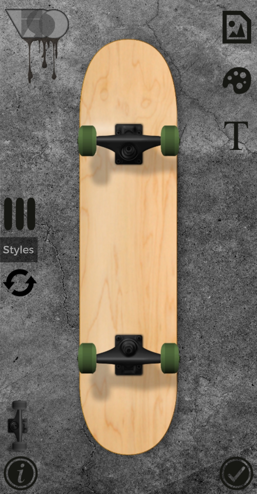

Goals
The Skateboard Builder application will allow users to design their own custom skateboard using a variety of different components. To support the user in accurately viewing their components and design, the application will have a 3D view that lets them rotate the selected part. After selecting all the components, the application will put them together allowing the user to view the entire skateboard design in an interactive 3D view. This 3-dimensional view is one of the applications main selling points and unique features. The application will support the purchasing of all the components so that the user can then build it in real life.
The Skateboard builder app should provide the user the following functionalities:
- Design a skateboard:
- Select Deck Design: A deck is the wooden board and largest component of skateboard. It usually contains a painted design but can also be plain colours. The designs are usually a big deal for skaters and there are many different ones out there. There should be multiple deck designs to choose from.
- Select Trucks: Trucks are a metal construction that is designed to hold the wheels and attached them to the deck from a distance. Trucks come in different shapes, sizes and colours. Different brands construct their trucks from different materials, impacting the choice of many skaters when it comes to purchasing some. Multiple brands and shapes of trucks should be included.
- Select Wheels: Wheels are constructed from different materials and can come in some different sizes. Weight and material are important to many skaters because it can make a difference in tricks and the speed of the board. Wheels can have multiple different designs on the sides of them. There should be multiple different wheel designs to select from.
- Select Griptape: Grip-tape is the tape that is applied to the top of a skateboard that helps the person riding the board stay on. It is specifically designed to prevent the skater’s feet from slipping which is especially useful when riding over rough surfaces or doing tricks. There are multiple different colours and designs for grip tape that the application should incorporate.
- Select Bearings: Bearings are the components that make the wheels spin. There are different bearings that are essentially just built with different qualities. There are not many popular variants of bearings however some skaters have favourites and a specific choice in the brand or type that they use. There should be multiple different bearings that the user can select.
- Save Skateboard Designs: Saving skateboard designs is essential part of the application. This allows users to create multiple designs and assess which one is best before deciding on what to purchase.
- Open SkatebBoards Designs: Opening a skateboard save should be simple and done from the menu of the application. The user should be able to view all their saved designs in one place.
- View the design in 3D: Viewing the overall design of a skateboard in 3D allows the user to get a good feel of what the physical board will look like. It is a strong tool and a big selling point in the application.
- View individual components in 3D: Viewing individual components in 3D means that the user can get a good idea of what the component looks like before adding it to their design. This is much more effective that the user choosing components from static 2D images.
- View Part Summary: After the user has selected all their components, they should be able to view what they have selected and the pricing for each. This is useful to make sure that they have got all the correct components in the design before saving or purchasing.
- Order parts: Ordering parts should be simple – enter address details and pay. The purchasing option should be available on the part summary page at the end of designing a board.
Christian Benner
Personas
The SkateboardBuilder application is primarily focused on one user base: skaters. The app will be a great place for people knew to skating to learn the different components and create their first board. Skaters can use this application to create their perfect design as they can get an accurate representation of how the complete build looks (thanks to the 3D view) before they buy it or put it together (unlike buying parts in a physical skate shop).
The application acts as a virtual skateboarding shop (allowing users to view and customise a skateboard remotely) therefore skaters living in slightly more remote areas are definately a target audience. Above this, many young skaters that live in rural areas cannot easily travel far to get to a skate shop. This target audiences age being considered, the user interface should be simple and easily navigable.
Overall, the users of my application are likely:
- Experienced skaters creating their perfect board
- New skaters looking to create their first board
- Skateboard shops designing an array of their own prebuilt skateboards
Average User Example
The average user of my application is likely a teenager living in a rural area. They cannot drive which makes it much harder for them to get to a skateboard shop. Getting to one requires them to get a bus to a town that is miles away. Even if they got to the skateboard shop, they do not know what skateboard they want or the different parts they can choose – they don’t want to waste time going to the skateboard shop if they do not have a part they want or like.
This is when the user downloads the skateboard builder application. It is free to download, available on Android and runs on most smartphones. The app opens and allows the user to start creating a new skateboard design within seconds, one by one selecting different components. The deck choice is big and contains multiple different designs allowing them to find the perfect one. They can also rotate the view to make sure that each component is right.
After the user selects all the desired components for their skateboard, they decide that they want to save it and design another to make sure they make the best design before purchase. After designing their second one they are extremely satisfied with the look of the skateboard on the 3D view. They decide to purchase this one and the parts arrive within a week. They can now build their perfectly designed skateboard and use it.
Christian Benner
Sketches
On this page you can find multiple mock-ups and designs that I created. The designs use colours, logos and images that will likely be different in the final application, however they give a general idea on how the application will look and feel. Also note that the products on most pages represent a 3D model on a 3D view (they are not going to be static 2D images in the application).
Christian Benner
Critique
When looking for applications on the Google Play store that are similar to mine, I only found two. They were both made by the same developer (Visual Sockets) and one is a newer and updated version of the first.
The first application that I am going to critique is called Skate Designer. The main differences between my application design and theirs is that theirs does not have a 3D view or have real skating brand components. The application does however allow you to put stickers and text on it.
Pros:
- Stickers: Stickers can be applied to the deck of the board. This is more functionality than I intended in my application. Implementing a 3D sticker placement system would increase the development time.
- Custom Deck Colour: Being able to select any colour you would like for your deck is a feature that this application has over mine. It is a good feature that I may consider implementing into my own application. This feature is used in this application because the decks don’t have any designs – just colours.
- Custom Truck Colour: You can select several different colours for the truck component on the skateboard. This is a feature that is good yet one I am not going to implement in my application. This is because my application will allow you to select from multiple different truck designs which will consist of different colours and models anyway.
- Custom Wheel Colour: You can select several different colours for the wheel component on the skateboard. This is a good feature however I am going to keep my application more realistic by making the wheel choice limited to brands/real products. This will also help in the purchasing of the components.
- Multiple Board Shapes: The application allows for multiple different board shapes. This is a fantastic feature as there are different types of skateboards that some people like to use. I personally know that a massive majority of skaters use one shape of board so to save a significant amount of development time I am only going to support one in my application.
Cons:
- No 3D View: There is no way to view components or the skateboard design in 3D. The design is only 2D images.
- No individual component view: You cannot view individual components. This means that you cannot get a good view of each part that your design is comprised of.
- No deck designs: You cannot select any textured/designed deck components which means you can only select colours and apply stickers afterwards to design your deck.
- No brand components: You cannot select different components e.g. different bearings, wheels, decks or trucks. The customisation is only colour.
- Inability to purchase components: After designing the skateboard you cannot purchase any of the components. This means you cannot build the design in real life and the app is classed as more of a game than a utility.
The second application is called Board Designer. It is created the same developer as the first application and is an updated/upgraded version. It allows you to design on more types of boards such as snowboards, surfboards, wakeboards and skimboards. This is better than the first one because of the amount of different types of boards you can customise, however the functionality remains the same. Assessed against my target audience, this upgraded version of the application is no better than the first.



Christian Benner
Technologies
To produce my application I am going to use multiple different technologies. The list of technologies is:
- Android Studio: This is an IDE developed by Android (Google). It is one of the best for Android development because it has multiple useful built in features e.g. debugging on a real smartphone by connecting it to the computer using the ADB (android debug bridge). The software is built on IntelliJ which is an existing and popular IDE. Android Studio is one of my personal favourites when it comes to IDE's and I feel confident in using it for the development of this project.
- CrispinEngine: This is a 2D and 3D graphics engine that I created in my personal time. It is built using OpenGL ES (open graphics library) and designed specifically for Android devices. The engine can import OBJ models and textures. It is very simple to use, and I am very familiar with how to use it so it is my number one choice over other engines. The engine is also fully documented. The GitHub URL for that is https://github.com/ChristianBenner/HordeSurvival/tree/master/crispinmobile.
- Java: I will write the application in Java because it is the primary Android programming language and Android Studio is very oriented around the use of it for development. It is also one of two programming languages that I am confident in. I am familiar with the object-oriented paradigm and believe that it is very suitable for my application.
- OBJ: OBJ format is a simple and easy to use model file type that can store vertex, texture and lighting data. This is suitable for my application as the engine I am using to display 3D graphics can load this file type. Most 3D modelling software allows the export of OBJ file types.
- Android SDK: I will also use Android SDK (software development kit) which comes built into Android Studio. Specifically, it is probable that I will use the user interface libraries to select different components on the 3D view (I may use CrispinEngine user interface library instead however).
Christian Benner